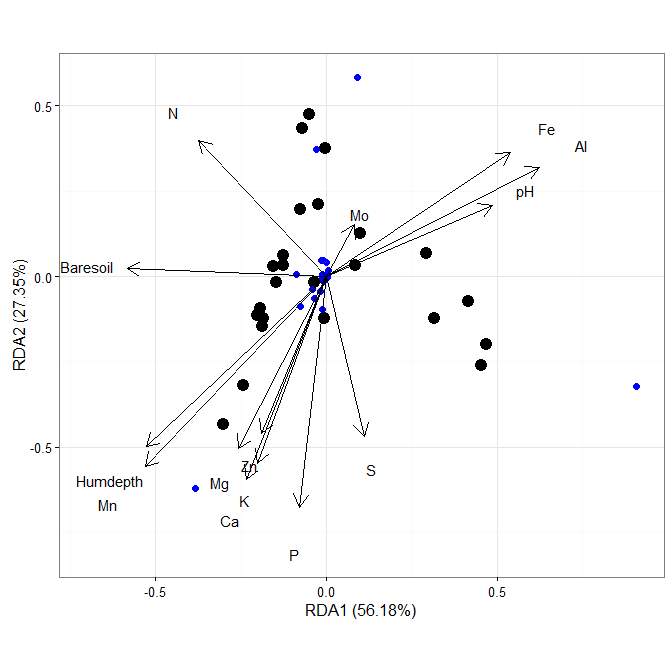
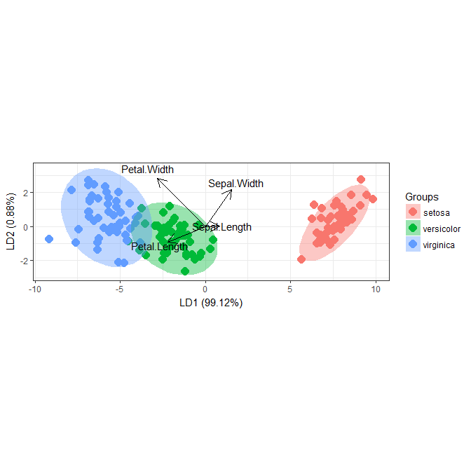
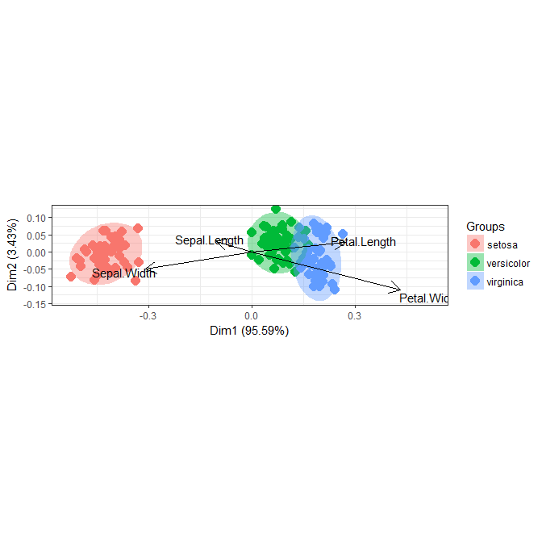
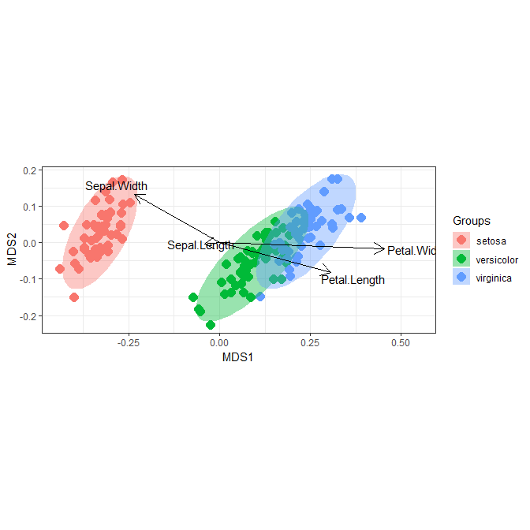
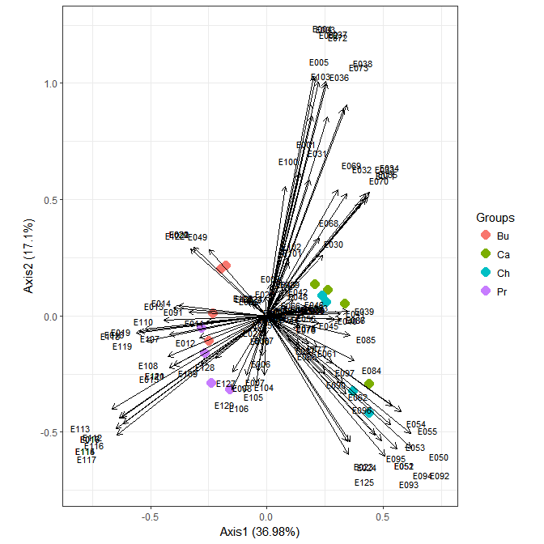
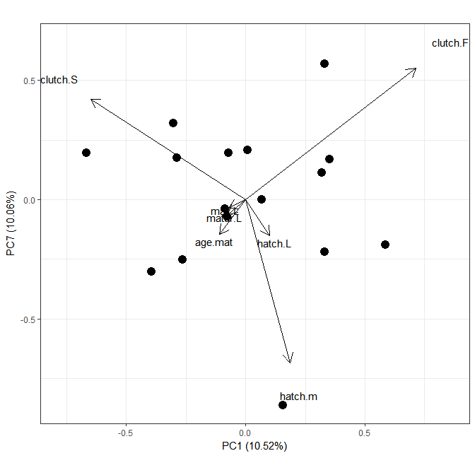
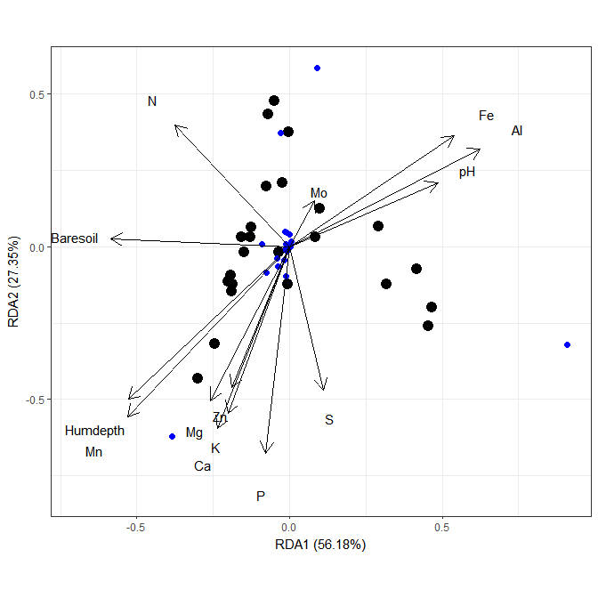
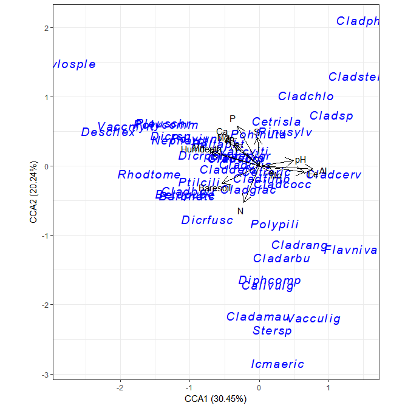
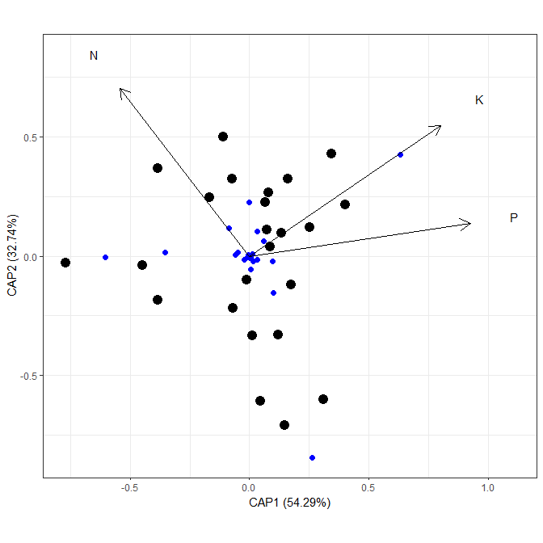
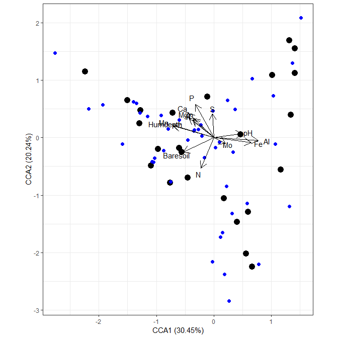

ggord
Marcus W. Beck, mbafs2012@gmail.com


A simple package for creating ordination plots with ggplot2 (aka reinventing the wheel, see this and this).
Installation
Install the package as follows:
install.packages('devtools')
library(devtools)
install_github('fawda123/ggord')
library(ggord)Citation
Please cite the current release as follows:
Marcus W. Beck (2017). ggord: Ordination Plots with ggplot2. R package version 1.0.0. https://zenodo.org/badge/latestdoi/35334615
Usage
The following shows some examples of creating biplots using the methods available with ggord. These methods were developed independently from the ggbiplot and factoextra packages, though the biplots are practically identical. Most methods are for results from principal components analysis, although methods are available for nonmetric multidimensional scaling, multiple correspondence analysis, correspondence analysis, and linear discriminant analysis. Available methods are as follows:
## [1] ggord.acm ggord.ca ggord.capscale ggord.cca
## [5] ggord.coa ggord.default ggord.dpcoa ggord.lda
## [9] ggord.mca ggord.MCA ggord.metaMDS ggord.pca
## [13] ggord.PCA ggord.ppca ggord.prcomp ggord.princomp
## [17] ggord.rda
## see '?methods' for accessing help and source code# principal components analysis with the iris data set
# prcomp
ord <- prcomp(iris[, 1:4])
p <- ggord(ord, iris$Species)
p
p <- ggord(ord, iris$Species, cols = c('purple', 'orange', 'blue'))
p
library(ggplot2)
p + scale_shape_manual('Groups', values = c(1, 2, 3))
p + theme_classic()
p + theme(legend.position = 'top')
# transparent ellipses
p <- ggord(ord, iris$Species, poly = FALSE)
p
# change linetype for transparent ellipses
p <- ggord(ord, iris$Species, poly = FALSE, polylntyp = iris$Species)
p
# convex hulls
p <- ggord(ord, iris$Species, ellipse = FALSE, hull = TRUE)
p
# change the vector labels with vec_lab
new_lab <- list(Sepal.Length = 'SL', Sepal.Width = 'SW', Petal.Width = 'PW',
Petal.Length = 'PL')
p <- ggord(ord, iris$Species, vec_lab = new_lab)
p
# observations as labels from row names
p <- ggord(ord, iris$Species, obslab = TRUE)
p
# map a variable to point sizes
p <- ggord(ord, grp_in = iris$Species, size = iris$Sepal.Length, sizelab = 'Sepal\nlength')
p
# change vector scaling, arrow length, line color, size, and type
p <- ggord(ord, grp_in = iris$Species, arrow = 1, vec_ext = 3, veccol = 'red', veclsz = 1, vectyp = 'dotted')
p
# change color of text labels on vectors, use ggrepel to prevent text overlap
p <- ggord(ord, grp_in = iris$Species, labcol = 'purple', repel = TRUE)
p
# faceted by group
p <- ggord(ord, iris$Species, facet = TRUE, nfac = 1)
p
# principal components analysis with the iris dataset
# princomp
ord <- princomp(iris[, 1:4])
ggord(ord, iris$Species)
# principal components analysis with the iris dataset
# PCA
library(FactoMineR)
ord <- PCA(iris[, 1:4], graph = FALSE)
ggord(ord, iris$Species)
# principal components analysis with the iris dataset
# dudi.pca
library(ade4)
ord <- dudi.pca(iris[, 1:4], scannf = FALSE, nf = 4)
ggord(ord, iris$Species)
# multiple correspondence analysis with the tea dataset
# MCA
data(tea, package = 'FactoMineR')
tea <- tea[, c('Tea', 'sugar', 'price', 'age_Q', 'sex')]
ord <- MCA(tea[, -1], graph = FALSE)
ggord(ord, tea$Tea)
# multiple correspondence analysis with the tea dataset
# mca
library(MASS)
ord <- mca(tea[, -1])
ggord(ord, tea$Tea)
# multiple correspondence analysis with the tea dataset
# acm
ord <- dudi.acm(tea[, -1], scannf = FALSE)
ggord(ord, tea$Tea)
# nonmetric multidimensional scaling with the iris dataset
# metaMDS
library(vegan)
ord <- metaMDS(iris[, 1:4])
ggord(ord, iris$Species)
# linear discriminant analysis
# example from lda in MASS package
ord <- lda(Species ~ ., iris, prior = rep(1, 3)/3)
ggord(ord, iris$Species)
# correspondence analysis
# dudi.coa
ord <- dudi.coa(iris[, 1:4], scannf = FALSE, nf = 4)
ggord(ord, iris$Species)
# correspondence analysis
# ca
library(ca)
ord <- ca(iris[, 1:4])
ggord(ord, iris$Species)
# double principle coordinate analysis (DPCoA)
# dpcoa
library(ade4)
data(ecomor)
grp <- rep(c("Bu", "Ca", "Ch", "Pr"), each = 4) # sample groups
dtaxo <- dist.taxo(ecomor$taxo) # taxonomic distance between species
ord <- dpcoa(data.frame(t(ecomor$habitat)), dtaxo, scan = FALSE, nf = 2)
ggord(ord, grp_in = grp, ellipse = FALSE, arrow = 0.2, txt = 3)
# phylogenetic PCA
# ppca
library(adephylo)
library(phylobase)
library(ape)
data(lizards)
# example from help file, adephylo::ppca
# original example from JOMBART ET AL 2010
# build a tree and phylo4d object
liz.tre <- read.tree(tex=lizards$hprA)
liz.4d <- phylobase::phylo4d(liz.tre, lizards$traits)
# remove duplicated populations
liz.4d <- phylobase::prune(liz.4d, c(7,14))
# correct labels
lab <- c("Pa", "Ph", "Ll", "Lmca", "Lmcy", "Phha", "Pha",
"Pb", "Pm", "Ae", "Tt", "Ts", "Lviv", "La", "Ls", "Lvir")
tipLabels(liz.4d) <- lab
# remove size effect
dat <- tdata(liz.4d, type="tip")
dat <- log(dat)
newdat <- data.frame(lapply(dat, function(v) residuals(lm(v~dat$mean.L))))
rownames(newdat) <- rownames(dat)
tdata(liz.4d, type="tip") <- newdat[,-1] # replace data in the phylo4d object
# create ppca
liz.ppca <- ppca(liz.4d,scale=FALSE,scannf=FALSE,nfposi=1,nfnega=1, method="Abouheif")
# plot
ggord(liz.ppca)######
# triplots
# redundancy analysis
# rda from vegan
data(varespec)
data(varechem)
ord <- rda(varespec, varechem)
ggord(ord)
# distance-based redundancy analysis, from vegan
ord <- capscale(varespec ~ N + P + K + Condition(Al), varechem, dist = "bray")
ggord(ord)
# canonical correspondence analysis
# cca from vegan
ord <- cca(varespec, varechem)
ggord(ord)
# species points as text
# suppress site points
ggord(ord, ptslab = TRUE, size = NA, addsize = 5, parse = TRUE)